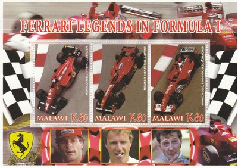
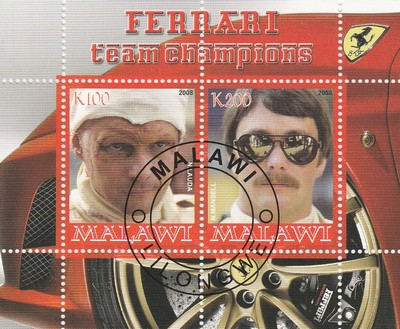
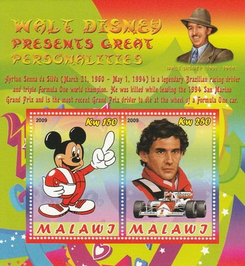
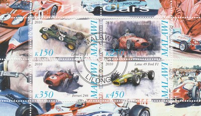
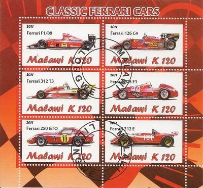
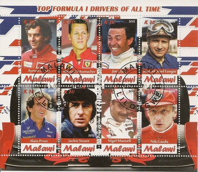

Republic of Malawi
 |
 Issue date: 2005 A sheet of 3 stamps showing various Ferrari F1 cars and their drivers; the stamps show the cars being driven at the Monaco Grand Prix. 1981, 126CK, Gilles Villeneuve - Villeneuve won the race from 2nd on the grid. 1995, 412T2, Gerhard Berger - Berger came 3rd in the race, despite the race being stopped and restarted after a first lap collision between Jean Alesi (Ferrari), David Coulthard (Williams) and Gerhard Berger (Ferrari), in which one of the Ferraris was briefly airborne. 2002, F2002, Michael Schumacher - Schumacher came 2nd, this being one of the few races he did not win this year.  Issue date: 2005 A sheet of 3 stamps showing various Ferrari F1 cars and their drivers; the stamps show the cars being driven at the Monaco Grand Prix. 1988, 187/88C, Gerhard Berger - Berger came 2nd from 3rd on the grid, just behind Alain Prost in the McLaren (after Ayrton Senna - McLaren - had spun off on lap 66). 1997, F310B, Eddie Irvine - Irvine came 3rd from 15th on the grid, the race was stopped at the 2 hour point on lap 62, wet weather provided a chaotic race. 2003, F2003-GA, Michael Schumacher - Schumacher came 3rd, less than two seconds behind race winner, Juan Pablo Montoya in the Williams-BMW.  Issue date: 2005 A sheet of 3 stamps showing various Ferrari F1 cars and their drivers; the stamps show the cars being driven at the Monaco Grand Prix. 1980, 312T5, Jody Scheckter - Scheckter (the 1979 drivers champion) actually retired from the GP due to mechanical failure, despite this he went on to come 2nd in the drivers championship in this year (his last in F1). 1992, F92A, Jean Alesi - Alesi retired on lap 28 with gearbox failure, after being 4th on the grid. 2000, F1-2000, Michael Schumacher - Schumacher retired (from the lead) on lap 55 with suspension failure, having been on pole position.  Issue date: 2008 Niki Lauda competed in F1 from 1971 to 1985; during his F1 career he drove for March, BRM, Ferrari, Brabham and McLaren. Lauda won the drivers title three times - 1975 and 1977 with Ferrari and 1984 with McLaren. Nigel Mansell competed in F1 from 1980 to 1995; during his F1 career he drove for Lotus, Williams, Ferrari and McLaren. Mansell finally won the drivers championship in 1992 with Williams (having been runner up in 1986, 1987 and 1991, each time with Williams).  Issue date: 2008 Gerhard Berger competed in F1 from 1984 to 1997; during his F1 career he drove for ATS, Arrows, Benetton, Ferrari and McLaren. Berger's best results were in 1988 and 1994, when was came 3rd in the drivers championship (both times with Ferrari). Jean Alesi competed in F1 from 1989 to 2001; during his F1 career he drove for Tyrrell, Ferrari, Benetton, Sauber, Prost and Jordan. Alesi's best results were in 1996 and 1997, when he came 4th in the drivers championship (both times with Benetton).  Issue date: 2008 In 1996, Schumacher joined Ferrari, a team which had last won the Drivers' Championship with Jody Scheckter in 1979 and which had not won the Constructors' Championship since 1983. He left Benetton a year before his contract with them expired. A year later, ex-Benetton employees Rory Byrne and Ross Brawn, who had been Technical Director at Benetton since 1991, and who was one of the key members behind Schumacher's title successes with the team in 1994 and 1995, decided to join Schumacher at Ferrari. This increased Schumacher's motivation to build a more experienced and potentially championship-winning team around him. Ferrari had previously come close to the championship in 1982 and 1990. The team had suffered a disastrous downturn in the early 1990s. At the end of 1995, though the team had improved into a solid competitor, it was still considered inferior to front-running teams such as Benetton and Williams. Schumacher, Ross Brawn, Rory Byrne, and Jean Todt (hired in 1993), have been credited as turning this once struggling team into the most successful team in Formula One history. Three-time World Champion Jackie Stewart believes the transformation of the Ferrari team was Schumacher's greatest feat. Eddie Irvine also joined the team, moving from Jordan in 1996. In 1999, his last year with Ferrari, he achieved his best result of 2nd place in the Drivers' Championship.  Issue date: 2009 The son of a wealthy Brazilian landowner, Ayrton Senna developed an interest in motor racing at an early age. Senna was Catholic. A very religious man, he openly conflated his beliefs with his racing, something for which he was criticized as dangerous by Alain Prost, among others. He often read the Bible on long flights from Sao Paulo to Europe. Senna expressed concern over the widespread poverty in Brazil, and privately spent millions of his personal fortune on underprivileged children. Shortly before his death he created the framework for an organisation dedicated to Brazilian children, which later became Instituto Ayrton Senna. Senna was often quoted using driving as a means for self-discovery, and racing as a metaphor for life: "The harder I push, the more I find within myself. I am always looking for the next step, a different world to go into, areas where I have not been before. It's lonely driving a Grand Prix car, but very absorbing. I have experienced new sensations and I want more. That is my excitement, my motivation." Towards the end of his career Senna became increasingly preoccupied with the dangers of his profession. On the morning of his death he initiated the re-formation of the GPDA safety organisation, with which he would work to improve the safety of his sport. Shortly before his death, Senna spoke of Formula 1 saying "you are always exposed to danger, danger of getting hurt, danger of dying. This is your life, and you either approach it in a, in a professional, in a cool manner or you just drop it, leave it alone and don't do it anymore. And I happen to like too much what I do to just drop it, I can't drop it". He was renowned for his close relationship with Gerhard Berger, and the two were always playing practical jokes on each other. Berger is quoted as saying "He taught me a lot about our sport, I taught him to laugh". In the documentary film The Right to Win made in 2004 as a tribute to Senna, Frank Williams notably recalls that as good a driver as Senna was, ultimately "he was an even greater man outside of the car than he was in it."  Issue date: 2010 Lotus 25 - The Lotus 25 was designed by Colin Chapman for the 1962 Formula One season. It was a revolutionary design, the first fully stressed monocoque chassis to appear in F1. The original sketches for the car were made on napkins while Chapman discussed his idea while dining out with Lotus chassis designer Mike Costin. The car gave Jim Clark his first Grand Prix victory, at Spa that year. Maserati 250F - The Maserati 250F was used in '2.5 litre' F1 racing between January 1954 and November 1960. Twenty-six examples were made. The 250F first raced in the 1954 Argentine Grand Prix where Juan Manuel Fangio won the first of his two victories before he left for the new Mercedes-Benz team. Fangio won the 1954 Drivers' World Championship, with points gained with both Maserati and Mercedes-Benz; Stirling Moss raced his own privately owned 250F for the full 1954 season. Ferrari 246 F1 - The Ferrari 246 F1 was built for the F1 World Championship of 1958. The regulations for 1954-1960 limited naturally aspirated engines to 2500cc and for the 1958 season there was a change from alcohol fuels to AvGas. The 246 used a 2417 cc Dino V6 engine with a 65degree angle between the cylinder banks. This was the first use of a V6 engine in a F1 car, but otherwise the 246 was a conventional front engine design. The Ferrari 246 was good enough to win a World Championship for Mike Hawthorn and a second place in the Constructors Championship for Ferrari. Lotus 49 - The Lotus 49 was designed by Colin Chapman and Maurice Philippe for the 1967 F1 season. It was designed around the Cosworth DFV engine that would power most of the F1 grid through the 1970s and was the first successful F1 car to feature the engine as a structural member. Jim Clark won on the car's debut in 1967, and it would also provide him with the last win of his career in 1968. Graham Hill went on to win that year's title and the car continued winning races until 1970.  Issue date: 2011 A mini sheet of six values featuring the following Ferrari f1 cars: Ferrari F1/89 (640) - 1989 - drivers: Nigel Mansell, Gerhard Berger, the car was fast, but unreliable - constructors championship: 3rd Ferrari 126 C4 - 1984, drivers: Rene Arnoux, Michele Alboreto - constructors championship: 2nd Ferrari 312 T3 - 1978, drivers: Gilles Villeneuve, Carlos Reutemann - constructors championship: 2nd Ferrari 625 F1 - 1954 and 1955  Issue date: 2012 A mini sheet of values which features the following F1 drivers: - Ayrton Senna - Michael Schumacher - Jim Clark - Juan Manuel Fangio - Alain Prost - Jackie Stewart - Nigel Mansell - Niki Lauda |